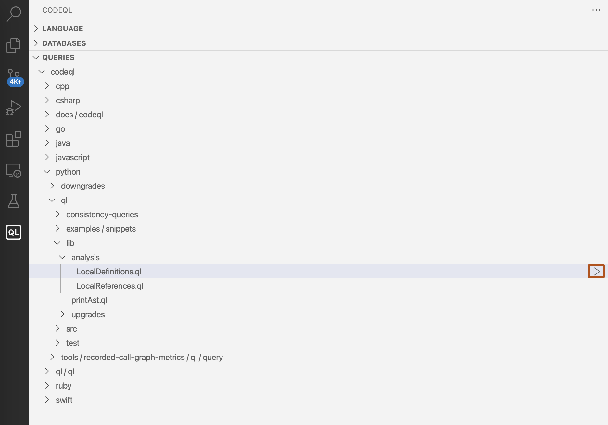

You can run queries on CodeQL databases and view the results in Visual Studio Code.
The github/codeql repository contains a large number of example queries. You can access any existing queries in your workspace through the "Queries" view.
To analyze a codebase, you run queries against a CodeQL database extracted from the code, so you'll need to select a database to work with in the extension. You can select a database locally (from a ZIP archive or an unarchived folder), from a public URL, or from a project's URL on GitHub.com. For more information, see Managing CodeQL databases.
In the sidebar, open the "Queries" view.
To run a query against the selected database, hover over the desired query, then click the Run local query icon.

The CodeQL extension runs the query on the current database and reports progress in the bottom-right corner of the application. When the results are ready, they're displayed in the CodeQL "Query Results" view.
If there are any problems running a query, a notification is displayed in the bottom right corner of the application. In addition to the error message, the notification includes details of how to fix the problem.
You can run every query in a directory.
In the sidebar, open the "Queries" view.
Hover over the desired directory of queries, then click the Run local queries icon.
You can run multiple queries with a single command.
Go to the File Explorer.
Select multiple files or folders that contain queries.
Right-click and select CodeQL: Run Queries in Selected Files.
When working on a new query, you can open a "Quick Query" tab to easily execute your code and view the results, without having to save a .ql file in your workspace. Select CodeQL: Quick Query from the VS Code Command Palette, then to run the query use CodeQL: Run Query on Selected Database.
You can see all quick queries that you've run in the current session in the "Query History" view. Click an entry to see the exact text of the quick query that produced the results. For more information, see Viewing your query history.
Once you're happy with your quick query, you should save it in a CodeQL pack so you can access it later. For more information, see Customizing analysis with CodeQL packs.
This can be helpful if you're debugging a query or library and you want to locate the part that is wrong.
Instead of using CodeQL: Run Query on Selected Database to run the whole query (the select clause and any query predicates), you can use CodeQL: Quick Evaluation to run a specific part of a .ql or .qll file.
CodeQL: Quick Evaluation evaluates a code snippet that you have selected, instead of the whole query, and displays results of that selection in the "Results" view.
Possible targets for quick evaluation include:
Selecting the name of a CodeQL entity (such as a class or predicate) to evaluate that entity.
Selecting a formula or expression with free variables to evaluate that formula or expression.
For example, in the following snippet, you could select the predicate name foo or the formula s = "bar" for quick evaluation:
predicate foo(string s) { s = "bar" }
This can be helpful if you want to test your query on multiple codebases, or find a vulnerability in multiple projects.
Open a query (.ql) file.
Right-click and select CodeQL: Run Query on Multiple Databases.
From the dropdown menu, select the databases that you want to run the query on.
To see the queries that you have run in the current session, open the "Query History" view.
The "Query History" view contains information including the date and time when the query was run, the name of the query, the database on which it was run, and how long it took to run the query:
To customize the information that is displayed, right-click an entry and select Rename.
Optionally, filter the view by language using the language selector. For more information, see Filtering databases and queries by language.
Click an entry to display the corresponding results, and double-click to display the query itself in the editor (or right-click and select View Query).
To display the exact text that produced the results for a particular entry, right-click it and select View Query Text. This can differ from View Query, as the query file may have been modified since you last ran it.
To remove queries from the view, select all the queries you want to remove, then right-click and select Delete.
Click a query in the "Query History" view to display its results in the "Results" view.
Note
Depending on the query, you can also choose different views such as CSV, CodeQL CLI SARIF output, or DIL format. For example, to view the DIL format, right-click a result and select View DIL. The available output views are determined by the format and the metadata of the query. For more information, see CodeQL queries.
Use the dropdown menu in the "Results" view to choose which results to display, and in what form to display them, such as a formatted alert message or a table of raw results.
To sort the results by the entries in a particular column, click the column header.
If a result links to a source code element, you can click it to display it in the source.
To use standard code navigation features in the source code, you can right-click an element and use the commands Go to Definition or Go to References. This runs a CodeQL query over the active file, which may take a few seconds. This query needs to run once for every file, so any additional references from the same file will be fast.
Note
If you're using an older database, code navigation commands such as Go to Definition and Go to References may not work. To use code navigation, try unzipping the database and running codeql database cleanup <database> on the unzipped database using the CodeQL CLI. Then, re-add the database to Visual Studio Code. For more information, see database cleanup.
When you're writing or debugging a query, it's useful to see how your changes affect the results. You can compare two sets of results to see exactly what has changed. To compare results, the two queries must be run on the same database.
Right-click a query in the "Query History" view and select Compare Results.
A Quick Pick menu shows all valid queries to compare with. Select a query.
The "Compare" view shows the differences in the results of the two queries.
To see the logs from running a particular query, right-click the query in the "Query History" view and select Show Query Log. If the log file is too large for the extension to open in VS Code, the file will be displayed in your file explorer so you can open it with an external program.
For details about compiling and running queries, as well as information about database upgrades, check the CodeQL Query Server log. For more information, see Accessing logs for CodeQL in Visual Studio Code.
By default, the extension deletes logs after each workspace session. To override this behavior, you can specify a custom directory for query server logs. For more information, see Customizing settings.
You can use the CodeQL: Restart Query Server command to restart the query server. This restarts the server without affecting your CodeQL session history. You are most likely to need to restart the query server if you make external changes to files that the extension is using. For example, regenerating a CodeQL database that’s open in VS Code. In addition to problems in the log, you might also see: errors in code highlighting, incorrect results totals, or duplicate notifications that a query is running.
You can optionally use the extension to create your own custom queries. For more information, see Creating a custom query.
For information on running analysis at scale across many CodeQL databases, see Running CodeQL queries at scale with multi-repository variant analysis.